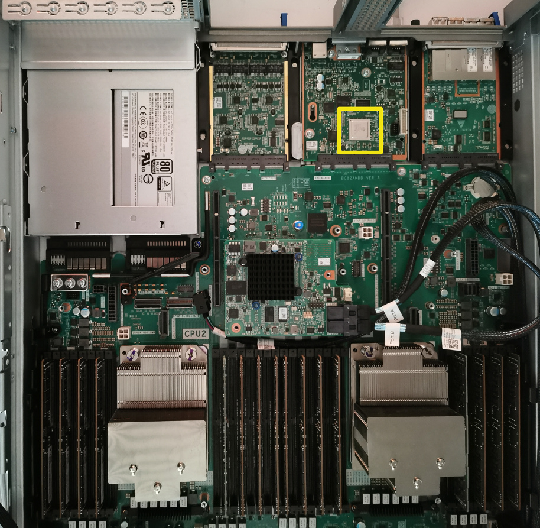
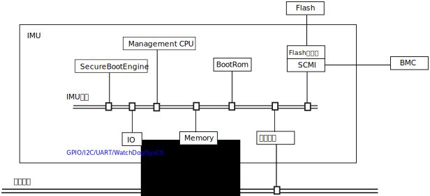

管理系统¶
服务器和一般PC一个很大的区别是它有BMC。BMC本质上也是一台计算机，它和主系统并行 运行在服务器中，一般它也不包含电源开关，只要接通电源，BMC就会进入工作。
下面是泰山服务器上的Hi1710 BMC芯片：

BMC有自己的CPU，存储，内存等所有设施，它可以直接控制主CPU和各种外设的电源，可以 读取传感器的值，它还通过连通鲲鹏920的PCIe设备提供显卡，键盘等虚拟设备，但它无法 直接控制鲲鹏920内部的设备。
在鲲鹏920芯片内部，还设计了另一个独立的系统负责配合BMC的工作，这个系统称为IMU， 负责配合BMC的工作。它也有自己的CPU，存储，有独立的线路连接片内的各个设备和传感 器，可以单独复位，挂起每个设备。它还包含Secure Boot Engine和Watch Dog等设施， 可以完成安全启动和死锁监控等功能。
eFusetodo
IMU集成在SICL中，可以复用总线进行全局通讯，但在内部，它有自己的总线和其他控制总 线，很多通讯不需要经过系统总线。当有多个SICL的时候，全系统只有一个IMU会被投入工 作。
这个子系统的结构如下：
